CHEBFUN2 GUIDE 2: INTEGRATION AND DIFFERENTIATION
A. Townsend, March 2013
Contents
2.1 SUM AND SUM2
We have already seen the sum2 command, which returns the definite double integral of a chebfun2 over its domain of definition. The sum command is a little different and integrates with respect to one variable at a time. For instance, the following commands integrate over the y variable:
f = chebfun2(@(x,y) sin(10*x.*y),[0 pi/4 0 3]); sum(f)
ans =
chebfun row (1 smooth piece)
interval length endpoint values
[ 0, 0.79] 38 3.8e-16 0.13
vertical scale = 2.1
A chebfun is returned because the result depends on x and hence, is a function of one variable. Similarly, we can integrate over the x variable, and we plot the result.
sum(f,2), plot(sum(f,2))
ans =
chebfun column (1 smooth piece)
interval length endpoint values
[ 0, 3] 38 -2.4e-16 0.033
vertical scale = 0.56
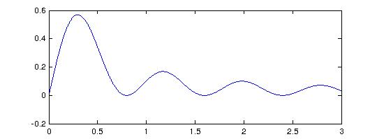 A closer look reveals that sum(f) returns a row chebfun while sum(f,2) returns a column chebfun. This distinction is made to indicate that sum(f) is a function of 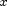 while sum(f,2) is a function of 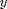. If we integrate over and then the result is the double integral of .
sum2(f) sum(sum(f))
ans = 0.377914013520379 ans = 0.377914013520379
It is interesting to compare the execution times involved for computing the double integral by different commands. Chebfun2 does very well for smooth functions. Here we see an example in which it is faster than Matlab's quad2d command.
F = @(x,y) exp(-(x.^2 + y.^2 + cos(4*x.*y))); tol = 3e-14; tic, I = quad2d(F,-1,1,-1,1,'AbsTol',tol); t = toc; fprintf('QUAD2D: I = %17.15f time = %6.4f secs\n',I,t) tic, I = sum(sum(chebfun2(F))); t = toc; fprintf('CHEBFUN2/SUMSUM: I = %17.15f time = %6.4f secs\n',I,t) tic, I = sum2(chebfun2(F)); t = toc; fprintf('CHEBFUN2/SUM2: I = %17.15f time = %6.4f secs\n',I,t)
QUAD2D: I = 1.399888131932670 time = 0.1797 secs CHEBFUN2/SUMSUM: I = 1.399888131932671 time = 0.0148 secs CHEBFUN2/SUM2: I = 1.399888131932671 time = 0.0090 secs
Chebfun2 is not designed specifically for numerical quadrature, and careful comparisons with existing software have not been carried out. Low rank function approximations have been previously used for numerical quadature by Carvajal, Chapman, and Geddes [Carvajal, Chapman & Geddes 2005].
2.2 NORM, MEAN, AND MEAN2
The 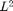-norm of a function 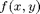 can be computed as the square root of the double integral of 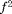. In Chebfun2 norm(f), without any additional arguments, computes this quantity. For example,
f = chebfun2( 'exp(-(x.^2 + y.^2 +4*x.*y))' );
norm(f), sqrt(sum2(f.^2))
ans = 2.819481057146934 ans = 2.819481057146936
Here is another example. This time we compute the norms of , 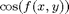, and the fifth power of .
f = chebfun2( @(x,y) exp(-1./( sin(x.*y) + x ).^2) ); norm(f), norm( cos(f) ), norm( f.^5 )
ans = 0.462652919760561 ans = 1.950850368197069 ans = 0.060896016071932
Just as sum2 performs double integration, mean2 computes the average value of over both variables:
help chebfun2/mean2
MEAN2 mean of a chebfun2
V = MEAN2(F) returns the mean of a chebfun2:
d b
/ /
V = 1/(d-c)/(b-a) | | f(x,y) dx dy
/ /
c a
where the domain of f is [a,b]x[c,d].
See also MEAN, STD2.
For example, here is the average value of a 2D Runge function.
runge = chebfun2( @(x,y) 1./( .01 + x.^2 + y.^2 )) ; plot(runge) mean2(runge)
ans = 3.796119578934827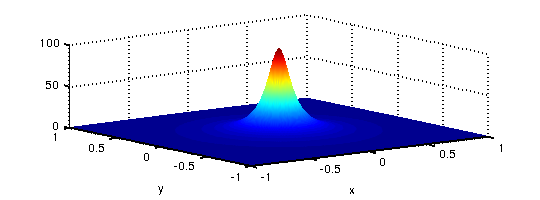
Moreover, the command mean computes the average along one variable. The output of mean(f) is a function of one variable represented by a chebfun, and so we can plot it.
plot(mean(runge)), title('Mean value of 2D Runge function wrt y')
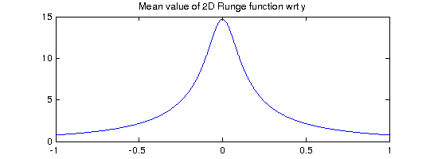 If we average over the variable and then the variable, we obtain the mean value over the whole domain
mean(mean(runge)) % compare with mean2(runge)
ans = 3.796119578934826
2.3 CUMSUM AND CUMSUM2
The command cumsum2 computes the double indefinite integral, which is a function of two variables, and returns a chebfun2.
help chebfun2/cumsum2
CUMSUM2 Double indefinite integral of a chebfun2.
F = CUMSUM2(F) returns the double indefinite integral of a chebfun2. That
is,
y x
/ /
CUMSUM2(F) = | | f(x,y) dx dy for (x,y) in [a,b]x[c,d],
/ /
c a
where [a,b]x[c,d] is the domain of f.
Also see CUMSUM, SUM, SUM2.
On the other hand, cumsum(f) computes the indefinite integral with respect to just one variable, also returning a chebfun2. Again, the indefinite integral in the y variable and then the x variable is the same as the double indefinite integral, as we can check numerically.
f = chebfun2(@(x,y) exp(-(x.^2 + 3*x.*y+y.^2) )); contour(cumsum2(f),'numpts',400), axis equal title('Contours of cumsum2(f)'), axis([-1 1 -1 1]) norm( cumsum(cumsum(f),2) - cumsum2(f) )
ans =
0
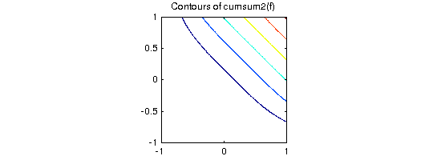 2.4 COMPLEX ENCODING
As is well known, a pair of real scalar functions and 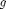 can be encoded as a complex function 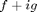. This trick can be enormously useful for simplifying many operations, but at the same time may be confusing. For instance, instead of representing the unit circle with two real-valued functions, we can represent it with one complex-valued function:
c1 = chebfun(@(t) cos(t),[0 2*pi]); % first real-valued function c2 = chebfun(@(t) sin(t),[0 2*pi]); % second real-valued function c = chebfun(@(t) cos(t)+1i*sin(t),[0 2*pi]); % one complex function % Two ways to make a plot of a circle. subplot(1,2,1), plot(c1,c2), axis equal, title('Two real-valued functions') subplot(1,2,2), plot(c), axis equal, title('One complex-valued function')

We have used this complex encoding trick in a number of places in Chebfun2. Specifically, it's used to encode the path of integration (see section 2.5, below), to represent zero contours of a chebfun2 (see Chapter 4), and to represent trajectories in vector fields (see Chapter 5).
We hope users become comfortable with using complex encodings, though they are certainly not required for the majority of Chebfun2 functionality.
2.5 INTEGRATION ALONG CURVES
We can compute the integral of along a curve 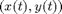. We use the complex encoding trick and encode the curve as a complex valued chebfun 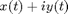. For instance, what is the area under the following curve?
clf f = chebfun2(@(x,y) cos(10*x.*y.^2) + exp(-x.^2)); % chebfun2 object C = chebfun(@(t) t.*exp(10i*t),[0 1]); % spiral curve plot(f), hold on plot3(real(C),imag(C),f(C),'k','linewidth',2)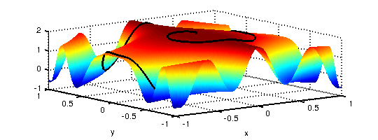
We can compute this by restricting f to the curve and then integrating
sum(f(C))
ans = 1.613596461872283
2.6 DIFF
In Matlab the diff command calculates finite differences of a matrix along its columns (by default) or rows. For a chebfun2 the same syntax represents partial differentiation 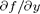 (by default) or 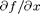. This command has the following syntax:
help chebfun2/diff
DIFF Derivative of a chebfun2.
DIFF(F) is the derivative of F along the y direction.
DIFF(F,N) is the Nth derivative of F in the y direction.
DIFF(F,N,DIM) is the Nth derivative of F along the dimension DIM.
DIM = 1 (default) is the derivative in the y-direction.
DIM = 2 is the derivative in the x-direction.
DIFF(F,[NX NY]) is the partial derivative of NX of F in the first
variable, and NY of F in the second derivative. For example, DIFF(F,[1
2]) is d^3F/dxd^2y.
See also GRADIENT, SUM, PROD.
Here we use DIFF to check that the Cauchy-Riemann equations hold for a analytic function.
f = chebfun2(@(x,y) sin(x+1i*y)); % a holomorphic function u = real(f); v = imag(f); % real and imaginary parts norm(diff(u) - (-diff(v,1,2))) norm(diff(u,1,2) - diff(v)) % Do the Cauchy-Riemann eqns hold?
ans =
0
ans =
0
For more information about complex valued functions in Chebfun2, see Chapter 4 of this guide.
2.7 INTEGRATION IN THREE VARIABLES
Chebfun2 can also work pretty well for integration in three variables. The idea is to integrate over two of the variables using Chebfun2 and the remaining variable using Chebfun. We have selected a tolerance of 1e-6 for this example because the default tolerance in Matlab's triplequad command is also 1e-6.
r = @(x,y,z) sqrt(x.^2 + y.^2 + z.^2); t = @(x,y,z) acos(z./r(x,y,z)); p = @(x,y,z) atan(y./x); f = @(x,y,z) sin(5*(t(x,y,z) - r(x,y,z))) .* sin(p(x,y,z)).^2; chebfunpref('eps',1e-6) % Chebfun tolerance is 1e-6 I = @(z) sum2(chebfun2(@(x,y) f(x,y,z),[-2 2 .5 2.5])); %integrate out x,y tic; I = sum(chebfun(@(z) I(z),[1 2],'vectorize')); t = toc; fprintf('Chebfun2: I = %16.14f time = %5.3f secs\n',I,t) tic; I = triplequad(f,-2,2,.5,2.5,1,2); t = toc; % Compare against MATLAB fprintf('Triplequad: I = %16.14f time = %5.3f secs\n',I,t) chebfunpref('factory')
Chebfun2: I = -0.48056569588577 time = 0.562 secs Triplequad: I = -0.48056493608769 time = 5.113 secs
2.8 MORE INFORMATION
For more information about the algorithms used in Chebfun2 please refer to [Townsend & Trefethen 2013].
2.9 REFERENCES
[Carvajal, Chapman & Geddes 2005] O. A. Carvajal, F. W. Chapman and K. O. Geddes, Hybrid symbolic-numeric integration in multiple dimensions via tensor-product series, Proceedings of ISSAC'05, M. Kauers, ed., ACM Press, 2005, pp.~84--91.
[Chebfun Guide] http://www2.maths.ox.ac.uk/chebfun/guide/
[Townsend & Trefethen 2013] A. Townsend and L. N. Trefethen, An extension of Chebfun to two dimensions, submitted.